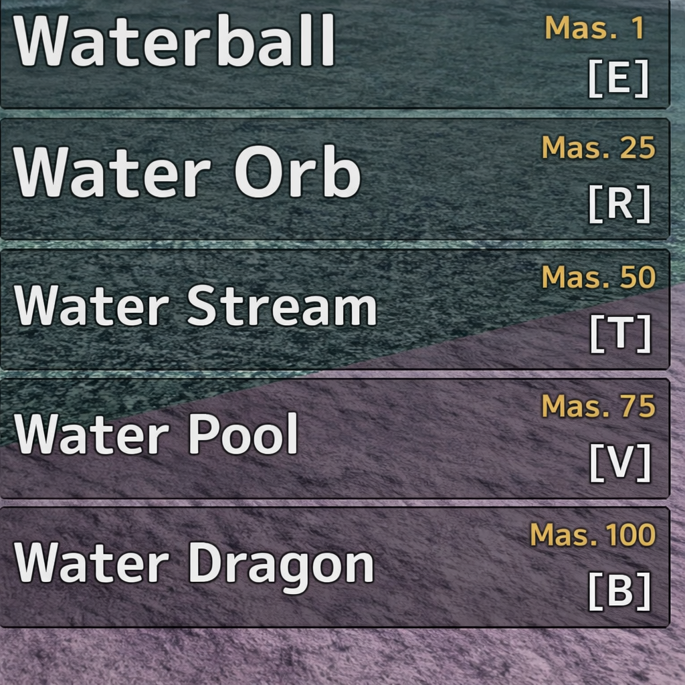

💧 WATER
ELEMENTAL 250
MASTERY 250
Waterball Mastery 1
Launches a water ball that deals 41 damage. (Ragdoll)
20 Chakra
🕒 6s Cooldown
Water Orb Mastery 10
Charges forward with a water sphere in hand; upon hitting an enemy, it deals 62 damage. (Stuns)
30 Chakra
🕒 9s Cooldown
Water Stream Mastery 25
Fires a blast of water that deals 90 damage.
45 Chakra
🕒 15s Cooldown
Water Pool Mastery 50
Creates a pool of water; anyone inside is stunned and takes 123 damage. (Stuns)
60 Chakra
🕒 20s Cooldown
Water Dragon Mastery 100
Launches a water dragon that launches the enemy into the air and deals 206 damage. (Stuns)
100 Chakra
🕒 35s Cooldown
